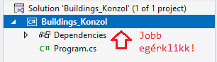
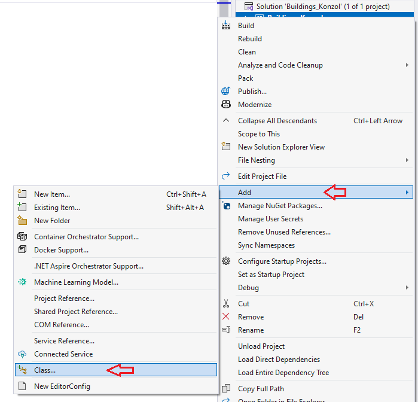
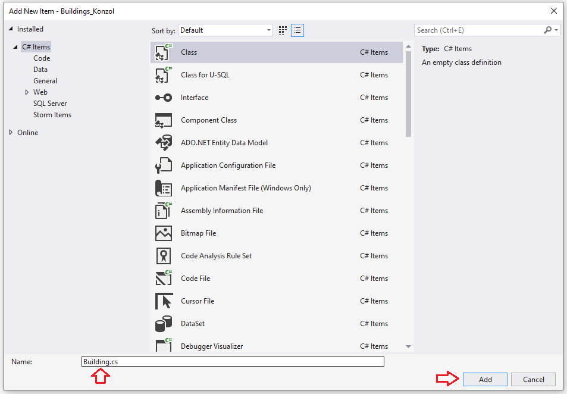
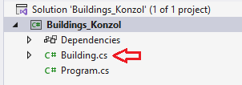

Building nevű osztály létrehozása
Kattintsunk a jobb egérklikkel a
Building_Konzol
projekten.

Válasszuk az
Add
és
Class...
lehetőségeket.

Írjuk be az osztály nevét, majd adjuk hozzá a projekthez.

Látható a projekt struktúrájában is:
